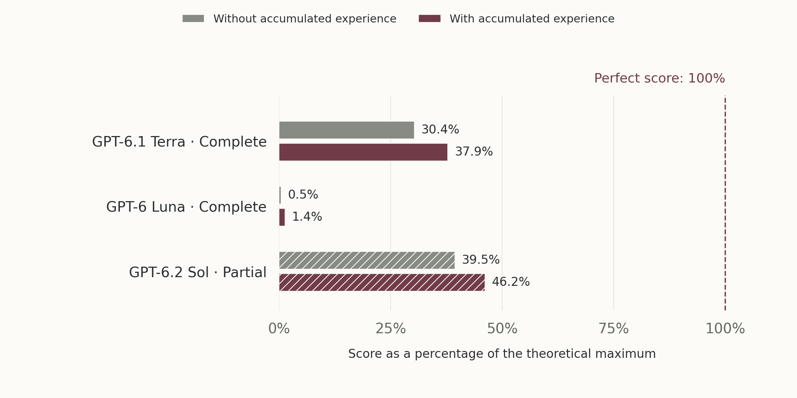

What should an agent learn from discovery?
I keep coming back to two questions. Can an agent work out something unfamiliar by choosing its own experiments? And when it encounters a new problem, does the earlier investigation make it a better learner?
OpenQFT grew out of wanting to study these questions together. A successful investigation is interesting in its own right. I am even more interested in what survives it: a useful idea, a better question, or a habit of checking an explanation before trusting it.
An intuition from the history of science
One inspiration is the history of particle physics. Observations arrived before a complete explanation. Researchers had to look for regularities, ask what those regularities implied, and decide which observation might change the picture. An explanation earned its value by helping them anticipate something they had not yet seen.
What interests me is this movement between evidence and explanation. Each discovery changes the questions that become worth asking. Experience can do more than supply another answer; it can change how the next investigation begins.
A snapshot across models
The initial-evaluation snapshot now includes GPT-6.1 Terra (gpt-6.1-terra), GPT-6 Luna (gpt-6-luna), GPT-6.2 Sol (gpt-6.2-sol), and Claude Opus 5.5 (claude-opus-5-5). All scores below are expressed as a percentage of the theoretical maximum: a perfect score is 100%.
Complete and Partial describe study coverage, not task success. The GPT-6.1 Terra and GPT-6 Luna main studies are complete. The GPT-6.2 Sol study is partial, and Claude Opus 5.5 currently has initial-evaluation results only. The initial batch is complete for all four models; the Partial label refers to the broader study.
The table separates initial evaluation from the experience comparison. They use different evaluation subsets, so a change between these columns should not be read as an improvement over time. Partial experience results include only completed matched comparisons; unfinished evaluations are omitted, not scored as zero. These are descriptive snapshots, rather than a definitive ranking.
| Model | Study coverage | Initial evaluation | Without experience | With experience |
|---|---|---|---|---|
GPT-6.1 Terragpt-6.1-terra | Complete | 23.9% | 30.4% | 37.9% |
GPT-6 Lunagpt-6-luna | Complete | 1.2% | 0.5% | 1.4% |
GPT-6.2 Solgpt-6.2-sol | Partial | 40.0% | 39.5% | 46.2% |
Claude Opus 5.5claude-opus-5-5 | Partial | 43.6% | Not available | Not available |

Collecting evidence is only part of the work
Choosing an experiment and making sense of its outcome are different abilities. An agent can collect observations while still missing a useful explanation. It can also settle on a plausible story too early and keep gathering evidence that fits it.
The GPT-6.1 Terra study motivates a closer look at this distinction. The comparison below places GPT-6.1 Terra alongside a diagnostic reference analysis. That reference also receives additional information, so the gap does not isolate a reasoning deficit. It is a prompt to ask which parts of an investigation need help, rather than a claim that every answer was already available to the agent.

When experience helps—and when it gets in the way
A later investigation need not begin from an empty page. In the selected GPT-6.1 Terra comparison below, accumulated experience is associated with better performance. That is encouraging: something from an earlier investigation can be useful again.
But useful memory needs judgement. A good explanation can guide a new experiment; an untested assumption can guide it in the wrong direction. I want to understand how an agent can carry forward what it has learnt while staying willing to revise it. The figure also includes the complete GPT-6 Luna study and available partial GPT-6.2 Sol results. Claude Opus 5.5 has no completed experience comparison to show yet. These descriptive means do not imply that memory helps every investigation.

The question I want to keep asking
For me, the exciting possibility is an agent whose experience improves the way it investigates. It notices when an explanation stops working, asks a more revealing question, and brings a useful idea to an unfamiliar problem.
That connects scientific discovery to continual learning: progress in one investigation becomes part of how the next one is approached. OpenQFT is where I am exploring that connection.
A research note, while the work develops
This is an intuition-led preview of independent, unpublished research. Figures show selected descriptive means, with 100% marking the theoretical maximum for the measure in each figure. The diagnostic measure and the overall evaluation score are different measures. Study coverage is marked explicitly. Experimental mechanisms and the full paper remain private while the work develops.
Updated November 2026